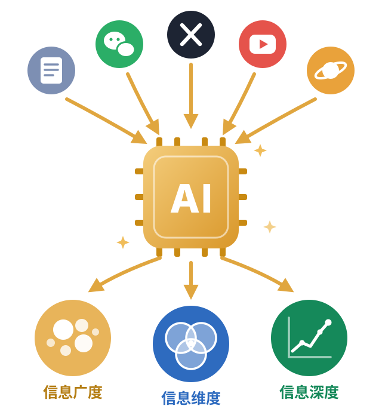

PERSONAL INVESTMENT & TRADING SYSTEM · V1.0 · 下篇
构建个人投资交易系统（下）
像个人一样持仓 · 像机构一样执行
个人投资交易系统 = 了解自己 × 善用工具 × 差异化信息源
下篇:分析篇 · 执行篇 · 吴斯 · 2026.09
上篇了解自己 · 工具篇 · 信息篇→
ABOUT ME
自我介绍 · 吴斯（现居奥克兰）
16 年码农,北大计算机;6 年个人投资,美股 & BTC & 港股
8 年互联网金融创业,主导过百亿级信贷规模落地,拿过雷军千万美金 B 轮融资
2 年数字货币量化创业,套利 / CTA / 做市商策略,经历币圈熊市,没赚也没亏
5 年上市保险公司直营业务负责人,操盘千万用户保险私域 AI 项目落地,利润上亿
PART 1 / 分析篇
信息看不完,交给 AI 来分析
信息量爆炸的时代,作为人类,看不完,根本看不完
利用 AI 采集感兴趣的信息源:推特、微信、公众号、知识星球……
利用 AI 进行摘要分析、标签分类、多空判断
信息广度利用标签做聚类分析,感知市场情绪
信息维度寻找多维度信息源的共识与差异,潜在 alpha
信息深度对信息源做 AI 跟单,生成收益曲线,订单流分析

数据采集:把平时看的信息源采集入库
Chrome 插件:定时采集推特关注列表、公众号、知识星球……
利用 Chrome 插件,定时采集推特关注列表、公众号、知识星球……
支持增量采集最新信息流,也能回溯历史
AI 摘要:把原文抽象成观点 + 标的 + 方向
博主每日摘要:一段观点总结 + 逐个标的的方向判断
将原始内容瘦身、翻译,抽象成具体观点,给出标的和方向判断
广度分析:同一个标的,看不同博主怎么说;深度分析:同一个博主,长期追踪他的观点
多空雷达:预判市场情绪,寻找背离点
多空雷达:每周热门标的的提及人数,以及整体偏多 / 中性 / 偏空占比
聚合每周的信息摘要做聚类分析,形成多空判断
观察偏多人群占比的相对变化,预判下周市场整体情绪
聚焦比特币:左轴价格(周),右轴提及人数,圆点颜色为当周情绪
利用情绪雷达扫描单只个股,寻找价格与情绪的背离点
例:BTC 8 月 9 日,价格处于 3 个月 25% 分位,情绪从中性转为偏多;之后连续 8 周偏多
价格低位 + 情绪转多 → 很好的建仓先行指标
跟单回测:这个博主的观点,真的能赚钱吗?
AI Agent 模拟跟单:收益曲线 + 交易模式画像 + 持仓与每期复盘
针对某个推特博主,深挖历史推文
设计 AI Agent 模拟跟单,形成收益曲线
对收益好、回撤低的曲线,重点关注它的模拟跟单订单流
正反馈循环:信息源越用越好
PART 2 / 执行篇
心得 1:用 AI 来执行,金字塔加仓 + DCA
金字塔参数设置 + 双向挂单预览(TSLA 示例)
软件实现成本趋近于 0,构建个性化工具极其方便
正三角买入:1 年低点上方分档挂单,越跌买越多,现金占比设上限
倒三角卖出:1 年高点下方边涨边出,持仓占比设上限
振幅 × 档位倍率参数化 → 双向 GTC 挂单,执行不靠情绪
心得 2:用 AI 克隆策略,期权策略面板
近 ATM 行权价分析 + ATM 年化收益率曲线(Term Structure)
期权太复杂:到期日、CALL/PUT、买卖方向、价格……用工具把复杂度收敛成两个问题:
卖 PUT 之后,年化收益多少?(ATM 年化收益率曲线)
万一被行权,实际持有成本多少?= 行权价 − Put 权利金
实际卖出价 = 行权价 + Call 权利金
心得 3:让 AI 看到自己的仓位,每周自动体检
AI 周报:本周关键变化 + 纪律体检红绿灯
claude / codex / workbuddy 自带 MCP 配置,Claude 直连 IBKR 接口
AI 直接分析仓位变化,给出调整建议,辅助决策
纪律体检红绿灯:持仓数、重仓数、杠杆、行业配比逐项对照
红灯直接亮出来:期权零现金覆盖、TLT 减持与计划冲突——系统不骗自己
AI 很强大,但不要迷信 AI
不要迷信 AI,他只是个极其强大且非常好用的工具
心得 1: AI 没有判断力,判断力是人给的——what you feed depends what you get
心得 2: 使用 AI 的人很重要,AI 让牛逼的人变得更牛逼,让傻逼的人……
心得 3: 提升自我认知没有捷径,读书 → 思考 → 实践;AI 可以加速这个进程,但无法替代
CONTACT
欢迎交流 · 吴斯_Aaron
扫二维码,添加我为朋友
✉ wsblackmoon@gmail.com
构建个人投资交易系统 V1.0（下）· 吴斯 · 2026.09